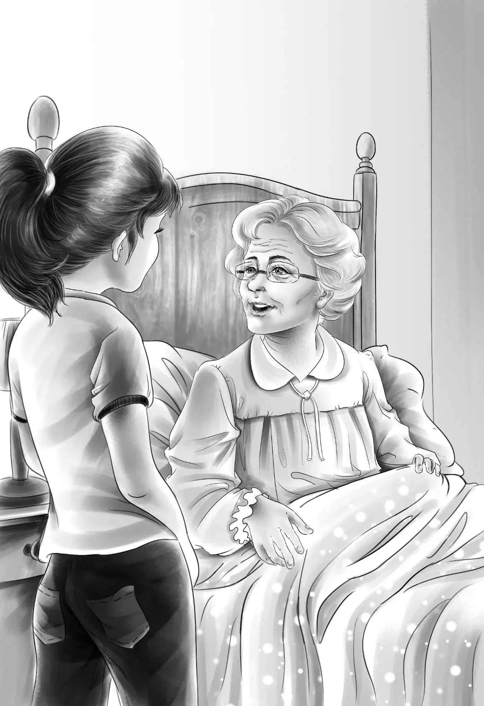

Golden Chimney
“今天我们可要吃一顿美味大餐啦！”杰西笑着说，“只要我不给太多，简姑婆应该会乐意吃光光的。”
“那可不一定，”麦琪说，“两年了，她从来没有好好吃过一顿饭。”
杰西说得没错。看到简姑婆的空盘子时，麦琪惊讶万分。
“真有你们的！”麦琪说，“我从来没见她吃过这么多。”
盘子洗干净以后，杰西轻轻地推开了姑婆的房门。
和上次一样，简姑婆还是躺在床上，似乎在期待着什么。
她问道：“你来干吗？”
杰西轻声回答：“维莉和我想问问您，我们能不能在房子里四处转转。”
“你们随便看吧，”姑婆说，“据我所知，这房子没什么秘密。”
“真的没有秘密吗？”杰西笑道。
“没有，”姑婆说道，“虽然没什么秘密，可这房子也挺特别的。你应该能看得出来，房子是分好几次一点一点盖起来的，由四个部分组成。”
杰西正要出门，姑婆叫住了她：“你们一定得去看看房子另一边的大烟囱。那是最漂亮的部分，是用我们自己山上的石头砌成的。”

“我们会的。”杰西说。
姐妹俩微笑着对视了一眼，走到了前屋。
“四处转悠一下吧！”杰西说。
维莉笑了起来：“真不知道我们为什么总是喜欢探索旧房子。”
姐妹俩走进前厅，穿过房间，居然在另一边又看到了一个一模一样的前厅。
“房子的这边和另一边完全一样，”杰西说，“瞧！这是厨房，小卧室，两间前屋，还有个侧门。”
“这就是烟囱和壁炉，”维莉说，“真好看！”
“石头又滑又亮！”杰西大声说，“瞧那些黄色的斑点，会不会是金子？”
“比金子还要明亮呢！”维莉说，“那些黑色的斑点也很漂亮。”
来到楼上后，她们发现了八个卧室。
“要是贴上壁纸，刷上漆，这里该有多棒啊！”杰西激动地说。
维莉推开一扇小房间的门，小房间就在简姑婆卧室的正上方。
“哇，好漂亮的房间！”她轻声惊呼，“快来看！”
这是整座房子里最漂亮的一间小房。旧壁纸是淡淡的玫瑰色，窗户上挂着精致的白色窗帘。床虽然不大，但是和她俩卧室里的床一样高，还挂着窗纱一样的白色床帐。
“不知道是谁布置了这个房间，”维莉说，“要是贴上紫色壁纸，就更好看了！我真想住在这里。”
“维莉，这房间很像你的风格呢！”杰西感慨道。
姐妹俩结束了老房子的探索，回到了楼下。
刚回到厨房，她俩便听到简姑婆正在呼唤麦琪。维莉也跟了进去，想看看姑婆究竟需要什么。
“你们看到烟囱了吗？”姑婆问。
“看到了，”维莉说，“烟囱真漂亮！”
“砌烟囱的石头都是从我们自己山上采的，”简姑婆说，“我们本来以为山上全是金子，其实根本不是。”
“黄色和黑色的斑点显得烟囱更漂亮呢！”维莉说。
“没错，要不然我父亲怎么会拿这些石头砌烟囱呢？”姑婆说，“而且他还说过，这个烟囱对他来说，就是一个活生生的教训。每次一看到烟囱，他就会认识到天上没有掉馅饼的好事儿。这样一来，即使找不到金子，他也不会感到失望！”
“这房子真的好漂亮，”维莉说，“好看的东西实在太多了。简姑婆，您能不能告诉我，是谁布置了正上方的小卧室？”
简姑婆沉默了好一会儿，维莉以为她不会回答了，就在这时，她突然开口道：“那是我以前的房间。”她的眼里泛起了泪花。